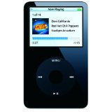

Music
Music is a huge part of society today and can really affect how a person lives life. Music can be a hobby (playing instruments, DJing) or be seen as a means of expression (i.e. a person who listens to classical music usually has a relaxed type of personality). Music builds on what has been discussed about audio mixers and different venues because both factor in to how music is experienced. Music can be heard through recordings played on an mp3 player or can be experienced live in concert, two completely different venues, and sound mixes, but both requiring an audio mixer.
Apple's iPod, pictured on the left, was monumental in changing the way people experience music and access it everywhere in their faily lives. It's introduction in the early 2000's marked one of the first times a device would let a person carry 1,000s of songs with them wherever they were at.